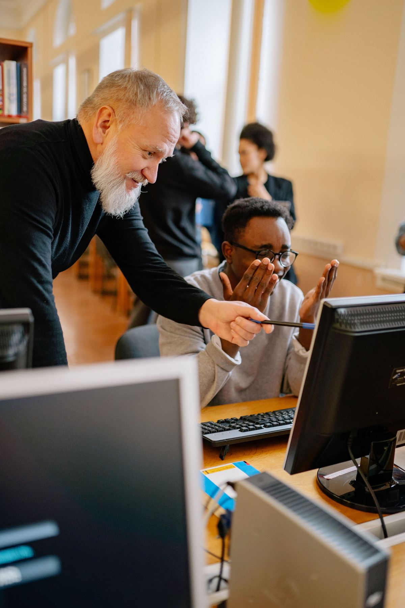

The workforce Canada’s cyber and AI sector cannot hire fast enough.
UFV FORGE is a computing hub where students operate real infrastructure and solve real business problems. It is designed to cover its own operating costs, and funding is released only as it passes four stage gates.
Federal investment
Estimated unfilled cybersecurity roles in Canada (ICTC, 2022)
Industry partners targeted by 2030
Kill-point gates before major commitments
A hub that connects students, professors, and local business.
It combines advanced labs (a cybersecurity range, a GPU/HPC cluster, and an IoT lab) with UFV-owned servers where every student gets a personal sandbox and runs live services, in the spirit of platforms such as pwn.college.
A Connection Fund pays student fellowships, faculty chairs, and industry matching. A diversified revenue model and a $20M endowment are designed to let the hub cover its costs after federal funding ends.

Five questions every funder asks. Five direct answers.
We follow the Five Case Model, the framework public funders use to test large investments and the G20 standard for infrastructure.
Strategic case
Is there a compelling need?
A 2022 ICTC report counted about 123,696 cybersecurity professionals in Canada against a shortage of about 25,000. Canada produces fewer than 4,000 graduates a year, and a 2026 Fortinet report ranks Canada second globally for ransomware attacks.
Employers want hands-on experience that students rarely get. The hub gives them live infrastructure and real client problems before graduation.
Read the vision →Economic case
Does it offer value for money?
Every dollar maps to a named line: facility, labs, a Connection Fund for fellowships and chairs, platform build, and a $20M endowment that keeps the hub running.
Comparable facilities exist (UNB with IBM, Arizona State’s ACE Institute). A formal cost–benefit appraisal is the next-stage deliverable.
See the budget →Commercial case
Is it viable in the market?
Revenue comes from tiered industry memberships, sponsored projects and student consulting, grants, nonprofit hosting, and training. Target: 25+ industry partners by 2030.
Construction and equipment are procured through fixed-price contracts where possible.
Inside the hub →Financial case
Is it affordable, and for how long?
Target revenue of $6.0M a year at full operation against roughly $5.5M in operating costs. Planned coverage: 80% of operating costs by 2030 and 100% by 2032.
5% contingency ($5M) is held by the steering committee, with a monthly earned-value review.
See the revenue model →Management case
Can it be delivered?
A steering committee owns the business case, a PMO integrates schedule, cost and risk, and workstream leads own outputs.
Four kill-point gates (Mar 2027, Dec 2027, Apr 2028, Jun 2029) require evidence and a recorded go, revise or stop decision. Gate 4 halts or rescopes if overrun exceeds 10%.
See the delivery plan →Sources: Herron & Quan (2022); Lexpert (2025); CP24 (2026); Shankar (2026). Full citations on the references page.
Seven lines. No unallocated funds.
Funding is earned at each gate, not assumed.
Each gate needs evidence, a named decision owner, and a recorded go, revise, or stop decision.
Charter approval
Governance and initial partner commitments verified.
Pilot and partners
If partners or costs fail criteria, scope is reduced or the project is halted.
Design sign-off
Construction proceeds only when permits and consultation are complete.
Mid-construction review
Halt or rescope if overrun exceeds 10%.
Built by four students, accountable like a project office.
Ranjit Gautam
Charter, integration, stakeholders, website, final report, presentation.
Pavneet Gill
Budget, revenue model, cost control, financial risks.
Gary Rai
Legal and compliance plan, schedule, Gantt chart, critical path.
Abiola Azeez
Video clips, research support, and stakeholder outreach.
Review the decision and the hard questions.
What we are asking, what could go wrong, and how we would respond.
Go to the decision